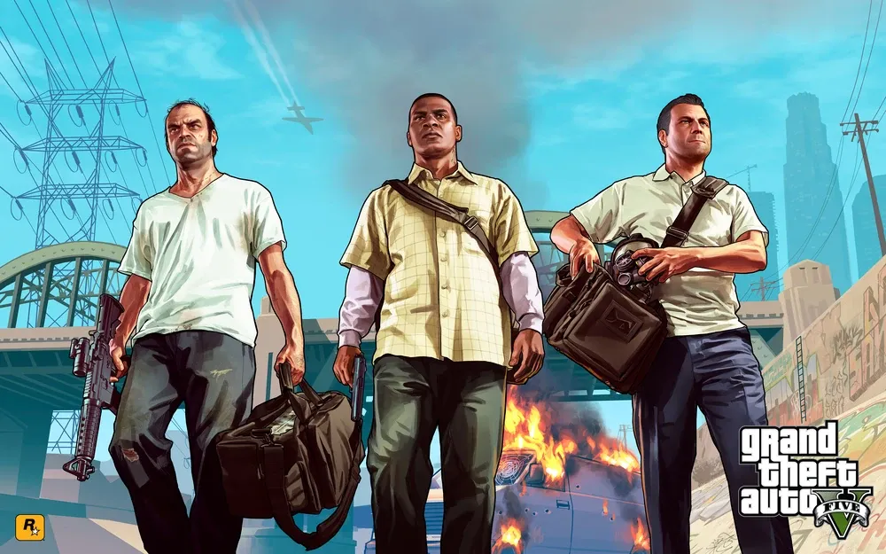
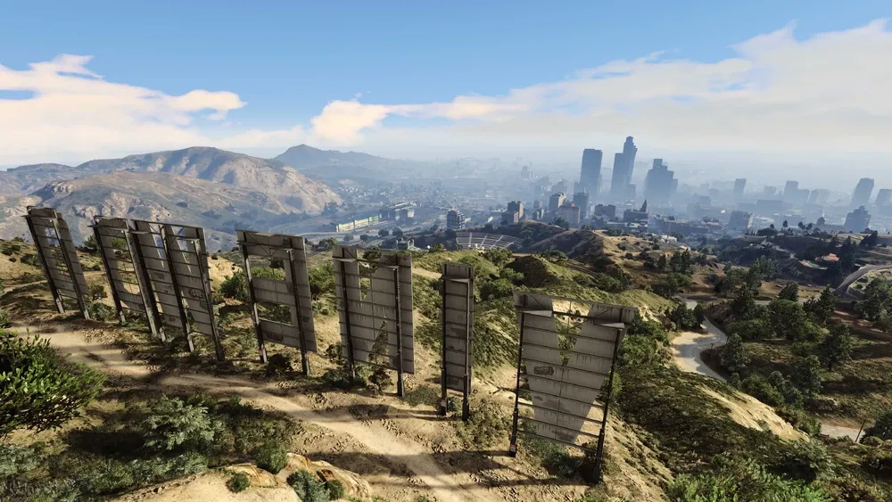

↑공식 트레일러↑
Grand Theft Auto 시리즈의 14번째 작품이자 5번째 넘버링 시리즈. 락스타 게임즈의 락스타 노스가 개발하였으며, 2013년 9월 17일 출시되었다.

어느 날 문득, 동네 건달과 은퇴한 은행 강도, 미치광이 사이코패스는 자신들이 어두운 범죄 세계와 미국 정부 기관, 엔터테인먼트 회사의 가장 끔찍하고 무시무시한 현실과 복잡하게 얽혀 있다는 걸 깨닫습니다.
아무도 믿을 수 없는, 서로조차 믿을 수 없는 이 무자비한 도시에서 살아남기 위해 그들은 여러 번의 위험한 습격에 몸을 던져야 합니다.

로스 산토스는 찬란한 햇빛을 받으며 거대하게 뻗은 대도시입니다.
이곳에는 감동적인 인간 승리를 이뤄낸 사람들과 수많은 아이돌 스타, 퇴물이 되어가는 유명인사 등, 한때는 서구 세계의 부러움을 한몸에 받았던 사람들이 경제 불황과 싸구려 리얼리티 TV 시대에 살아남으려 발버둥치고 있습니다.
이런 혼란의 시기에 세 명의 서로 다른 범죄자들이 생존과 성공의 기회를 잡고자 계획을 세웁니다. 별 볼 일 없는 건달 프랭클린은 제대로 된 기회를 잡아 큰돈을 벌고 싶어합니다.
화려한 전과자였던 마이클은 은퇴 후 지루한 생활을 보내다가 다시 화려한 시절을 꿈꿉니다. 싸구려 마약에 찌든 난폭한 미치광이 트레버는 큰 건수를 노리고 있습니다.
막다른 길에 내몰린 이들은 각자의 모든 것을 걸고 일생일대의 대담하고 위험한 사건을 잇달아 저지릅니다.
역대 최고로 거대하고 역동적이며 다양한 오픈 월드 안에서 Grand Theft Auto V는 새로운 방식으로 이야기 전개와 게임 플레이를 혼합했습니다. 플레이어는 게임의 세 주인공의 인생에 들락날락하면서 서로 교차하는 이야기를 모두 플레이하게 됩니다.
세상을 놀라게 한 Grand Theft Auto 고유의 매력적인 요소는 물론, 놀랍도록 정밀한 표현과 현대 문화에 대한 블랙 유머가 더해져 돌아옵니다. 또한, 오픈 월드 멀티 플레이 게임에 대한 완전히 새롭고 야심 찬 접근도 주목하십시오.
본명 - 마이클 타운리 (Michael Townley)
출생 - 1965년 (48세)
신체 - 185 cm | 102 kg | B형
거주지 -
미국 북부 양크턴 주 루덴도로프 (이전)
미국 산 안드레아스 주 로스 산토스
국적 - 미국
가족 - 아만다 드 산타 (아내)
트레이시 드 산타 (딸)
지미 드 산타 (아들)
마이클 소개 문구
마이클은 베테랑 은행 강도입니다. 몇 년 동안의 성공적인 범죄 경험을 통해 전문적인 범죄 지식을 보유한 전문가이기도 합니다.
지금은 은퇴했으며 일종의 은밀한 증인보호 프로그램 덕분에 편안하게 생활하고 있지만, 마이클에게도 문제는 있습니다.
돈을 물 쓰듯이 쓰는 아내, 그리고 도저히 이해할 수 없는 막 나가는 자녀가 둘이나 있죠. 마이클은 범죄 세계에서 살아남았고 바라던 모든 걸 얻었지만 여전히 조금도 행복하지 않습니다.
Grand Theft Auto V의 주인공
3명의 주인공 중 리더 격의 인물이자 본작의 사건과 인물 관계의 중심에 서 있는 인물.
트레버 필립스와 레스터 크레스트와는 프롤로그 이전부터 함께 강도짓을 저질러 온 동료 관계이며, FIB의 데이브 노튼과 한 거래를 시작으로 스티브 헤인즈, 데빈 웨스턴과 엮인다.
아들인 지미 드 산타의 기행으로 프랭클린 클린턴과도 만나며 주인공 3인방과 주변 인물들이 본격적으로 얽히는 모든 사건의 시작점이 되는 인물이다.
원래는 1965년생의 '마이클 타운리'지만 은퇴한 후 신분 세탁을 위해서 예전부터 사용하던 위장용 신분인 1968년생의 '마이클 드 산타'로 이름을 바꾼다.
마이클의 묘비와 트레버의 문신에 적힌 생년은 원래 생년인 1965년이지만 마이클의 위장용 신분의 정체를 레스터와 트레버가 알기 때문인지 1968년생으로도 언급한다.
나이 - 25세 (스토리 모드) , 33세 (온라인)
신체 - 185 cm, 97 kg, B 형
거주지 -
미국 산 안드레아스 주 로스 산토스
국적 - 미국
가족 - 타니샤 클린턴 (아내)
데니스 클린턴 (이모)
타벨 클린턴 (사촌)
촙 (반려견)
자녀
프랭클린 소개 문구
한때 거리의 깡패인 프랭클린은 큰 돈을 벌 기회를 노립니다. 잘 나가는 야심에 찬 젊은이들을 꼬드겨 무지막지하게 비싼 차를 팔아넘기는 아르메니아인이 운영하는 고급 자동차 대리점에서 자동차 압류원으로 일하고 있습니다.
돈도 없으면서 욕심만 냈다가 지불할 능력이 없어지면 프랭클린이 나타나 자동차를 회수하는 것이죠.
Grand Theft Auto V의 주인공
로스 산토스의 슬럼가 출신이자 거리의 깡패였으나, 슬럼가 생활에서 벗어나 자립하려는 인물이다.
주인공 3인방 중 최연소이며, 과거부터 질긴 인연을 이어 온 다른 두 주인공들과는 달리, 마이클의 아들 지미 드 산타의 차량을 불법으로 압류하다가 마이클에게 저지당하며 처음 관계를 맺기 시작한다.
출생 - 미상 (국가 충돌로 인한 불명)
신체 - 186 cm | 94 kg | B형
거주지 -
샌디 해안 알라모 해 트레일러
로스 산토스 베스푸치 해변 콘도
로스 산토스 바닐라 유니콘 스트립클럽
국적 - 캐나다 | 미국
가족 - 필립스 부인 (엄마)
라이언 필립스 (형제)
트레버 소개 문구
트레버는 다른 사람들이 만든 규칙과 규범에 따라 사는 데에는 관심이 없습니다. 상습적인 마약 사용자이며 파괴적인 발작과 무시무시한 광란에 쉽사리 빠지곤 하는 정말 성질이 더러운 인간입니다.
옛날에는 마이클의 범죄 동료였죠. 트레버에 대한 이야기는 많이 하지 않을수록 좋습니다.
Grand Theft Auto V의 등장인물이자 3명의 주인공 중 한 명.